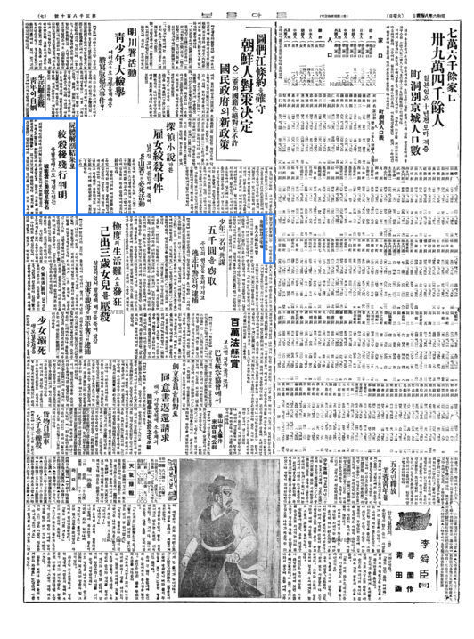
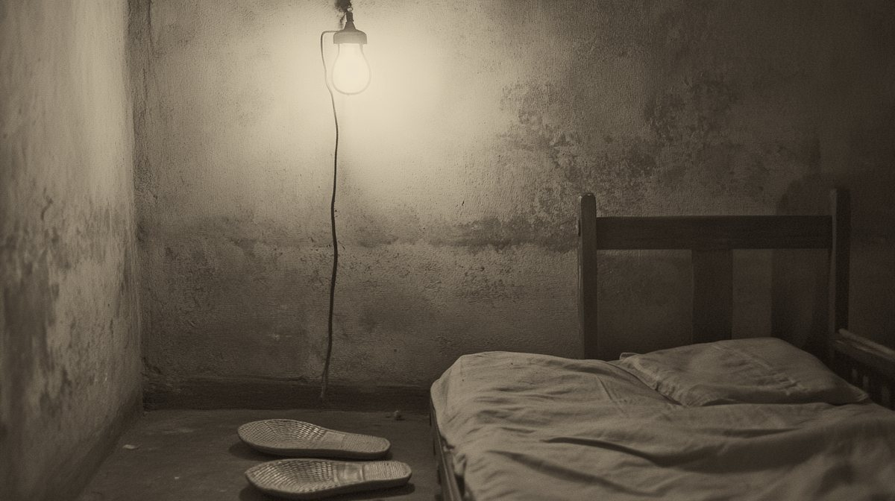
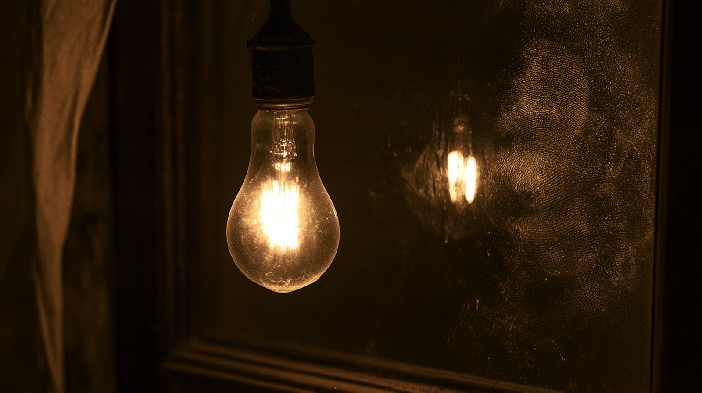
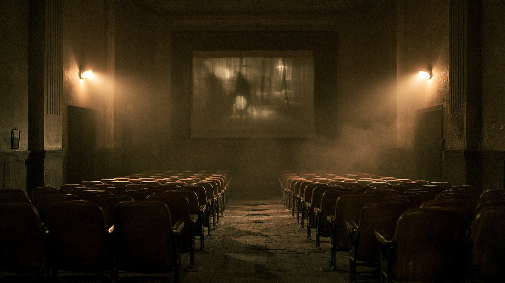
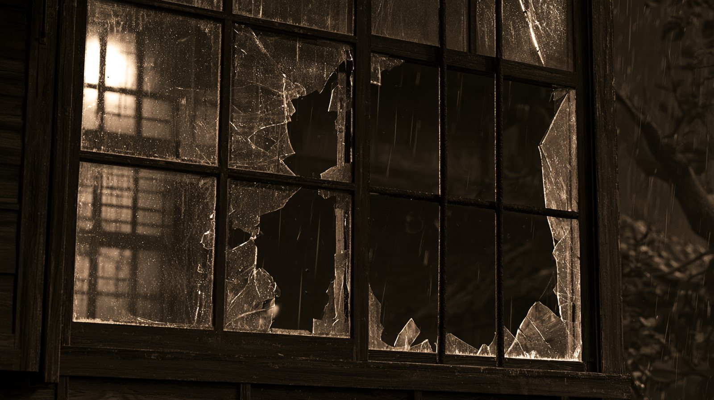
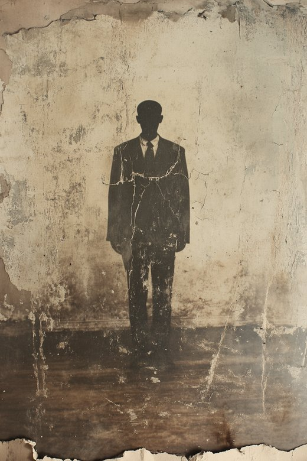
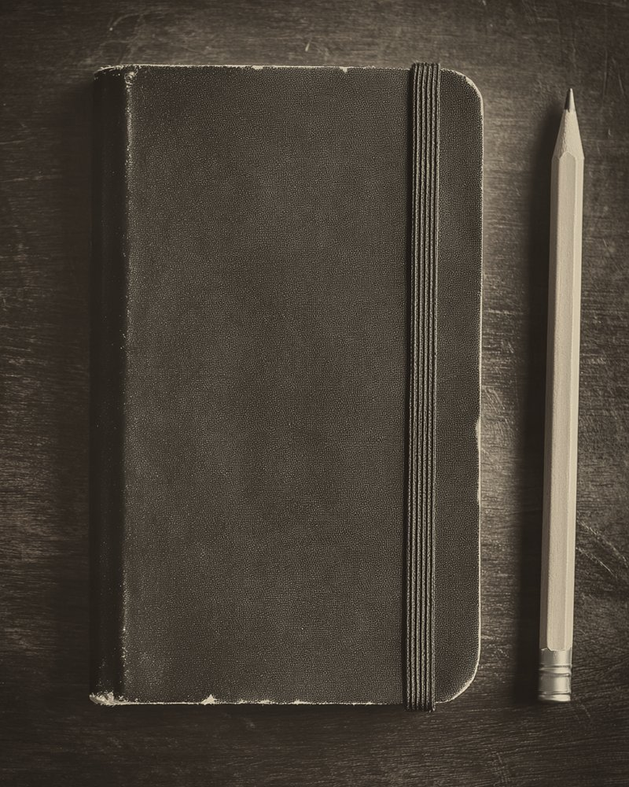

주인은 출장 중이엇고 — 아씨는 그 밤만, 제 방이 아닌 방에서 잣소.
釜山 草梁
鐵道官舍
朝鮮人 下女
變死
부산 초량 · 철도 관사 · 조선인 하녀 · 변사
至急재구성그 여름, 편집국 책상 우에 전보 한 장이 노혓소.
스무 살 하녀가 — 제 방에서, 아츰 열 시가 되도록 이러나지 아넛다 하오.
주인은 집에 업섯고, 밧게서 드러온 자취도 업섯소.
나는 부산으로 내려갓소.
※ 이 이약이를 끌고 가는 「나」는 당시 지면을 바탕으로 꾸민 긔자요. 사건의 사실은 모두 당시 지면과 긔록에서 옮겻소.
原文동아일보 1931.8.4 ~ 9.16 · 1933.11.10 · 판결은 『중앙』 1934.3 공판기
부산 초량정 철도국 관사에서 스무 살 조선인 하녀가 숨진 채 발견되엿소. 일본인 주인들은 그 일홈이 어렵다 하야 '마리아'라 불럿소.
일홈 업는 편지 두 통이 경찰서에 날아들엇소. 팔월 이십구일 새벽, 경찰은 주인집 부인 오하시 히사코를 잡아드렷소.
히사코는 무죄. 이 년 뒤 잡힌 이노우에도 끗내 무죄. 벌 바든 이는 업섯소 — 그 밤 그 방의 일은, 아즉 아모도 모르오.
출처 · 동아일보 아카이브 (1931년 8월 4일 ~ 9월 16일자, 1933년 11월 10일자 지면) · 부산일보 「최학림의 잡설 부산사」(2017) · 전봉관 『경성기담』 · 한국사 데이터베이스
解說동아일보 1931 지면 · 공판 기록에서 뽑은 물음
남편이 떠난 뒤 아씨는 줄곧 응접실에서 잣소. 그런데 그 밤만은 — 하녀 방 바로 엽방에서 잣소. 그리고 아모 소리도 듯지 못하엿다 하오.
사건 이틀 뒤 날아든 편지는 창 너머로 그 밤을 보앗다 하엿소. 물건을 버린 곳까지 적혀 잇섯소.
히사코가 잡혓고, 이 년 뒤 이노우에도 잡혓소. 한 번은 무기징역까지 나왓소. 그러나 벌을 바든 이는 업소.
이 물음 셋을 품고 내려가시압.답은 — 第十一話 판결 장에서 다시 맛나오.
팔월 일일 아츰의 일은, 사흘 뒤 활자가 되엇소.
나는 그 첫 지면을 접어 품에 넛코, 초량으로 갓소.
原文동아일보 1931.8.4 · 처음 실린 지면

鉛版그날 아츰 윤전긔에 걸린 판 — 손가락을 대고 문지르면 지면이 보이오
八月 一日 아츰, 초량뎡 철도관사에서 조선인 하녀 하나가 죽엇다.
일인 관리의 담장 안에서 난 일은, 담장 안에서 끗나기 쉬웠다.
사흘 뒤, 동아일보는 그 죽음을 활자로 박아 세상에 내노핫다.
그날부터 삼 년 — 동아일보는 이 사건에서 눈을 떼지 아니하엿다. 그러나 끗내, 범인의 일홈은 실리지 못하엿다.
담장 안에서 난 일은, 담장 안에서 끗나기 쉬웠소.
나는 그 집의 방을, 하나씩 세어 보앗소.
再構成공판기(『중앙』 1934.3) · 동아일보 공판 기사 바탕 · 그림은 재현

그림 · 재현비명은 이웃집까지 들렸고, 그 방엔 몹시 몸부림친 자국이 남아 있었다. 바로 옆방에서 1시와 3시에 두 번 깨어 화장실에 다녀온 히사코는 — 아무 소리도 듣지 못했다고 했다.
나는 그 하로를, 시계 바늘처럼 다시 세어 보앗소.
그 집에서 — 그 밤 깨어 잇든 것은, 누구엿는가.
再構成『중앙』 1934.3 공판기 · 동아일보 1933.12.15 ~ 17 바탕 · 그림은 재현
소화 륙 년 칠월 삼십일일 낫부터, 이튿날 아츰 열 시까지. 천천히 내려가며 — 누구의 말인지를 보시압.
기록진술증언자백투서말한 이가 다르면, 미들 수 잇는 정도도 다르오.
아씨가 마리아를 다리고 사진관에 가서, 함께 사진을 박엇소.
저녁밥 무렵 양복집 점원이 왓소. 「마리아가 고향 갈 때 입을 옷」이라 하엿소.
훗날 — 실제로 지은 것은 아씨 제 양복이엇소.마리아가 안방 이부자리를 펴고 인사하자 — 「피로할 테니, 래일은 늣게 이러나도 조타.」 처음 듯는 너그러운 말이엇소.
그리고 아씨는 — 궂은비 나리는 공원으로 산보를 나갓소.
검사는 훗날, 이 산보를 「누군가를 다리러 간 길」이라 보앗소.아씨 취침. 그 밤만은 응접실이 아니라 — 하녀 방 엽방에서.
하녀 방의 전깃불이, 열한 시까지 켜져 잇섯소.

이웃집 하녀가 녀자의 비명을 드럿소. 부검이 본 죽은 시각과도 맛소.
그 시각 이노우에는 — 중앙극장에서 「요쓰야 괴담(四谷怪談)」을 보고 잇섯다 하오.

아씨, 이러나 변소에. 「낫에 수박을 만히 먹엇소.」
훗날 이노우에의 첫 자백이 말한 시각.
부검 · 이웃의 증언과 — 맛지 안소.아씨, 다시 변소에. — 그리고 일홈 업는 편지가 「비명을 드럿다」고 한 시각.
부검 · 이웃의 증언과 — 맛지 안소.
아씨 기상. 창을 열고 신문을 읽고, 늘 둘이 하든 아츰 운동을 — 혼자 하엿소.
아씨가 하녀 방 문을 열엇소. 「실컷 자라 일러 둔 터라, 자고 잇스려니 하엿소.」
셋 가운데 둘은 — 거짓이오. 그리고 그 밤 내내, 벽 한 겹 너머의 아씨는 아모 소리도 듯지 못하엿다 하오.
근거 · 『중앙』 1934년 3월호 「그로 100% 부산 마리아사건 공판기」 · 동아일보 1933년 12월 15~17일 공판 기사 — 『신동아』 2006년 1월호 「부산 마리아 참살 사건」(전봉관)에 옮긴 것을 바탕으로 함
날마다 원고를 경성으로 보냇소.
날마다 — 범인의 일홈 칸은 비어 잇섯소.
原文동아일보 1931.8.4 ~ 9.16 지면
첫 보도부터 투서 공개까지, 륙 주일 동안 여섯 번 실린 지면.
그 밤 그 집 갓가이 잇섯든 이들.
나는 한 사람씩 일홈을 적고, 그 아래에 물음표를 그렷소.
再構成동아일보 긔자가 부산에 나려가 한 사람식 캐어 적은 수첩 — 다시 엮음
※ 동아일보 보도와 뒷날의 긔록을 바탕으로 다시 엮은 것이오.
그러든 어느 날, 경찰서에 일홈 업는 편지가 날아들엇소.
편지를 쓴 이는 — 나보다 만히 알고 잇섯소.
原文동아일보 1931.9.2 · 9.16 · 편지 그림은 재현
목격담이엇는가, 꾸민 이약이엇는가.
편지를 쓴 이는 잡혓스나, 죽인 이는 업섯소.
팔월 이십구일 새벽, 관사에 자동차 불빗이 드러섯소.
나는 그 녀자의 말을 — 한 줄씩, 긔록 엽헤 노하 보앗소.
再構成『중앙』 1934.3 공판기 바탕 · 조서 모양은 재구성
팔월 이십구일 · 새벽 한 시
모토하시(元橋) 검사가 경관 수십 명을 자동차에 태우고 관사를 에워쌌소.
압뒤로 경계선을 치고 — 뒷문으로 드러가, 아씨를 다려갓소.
아씨의 말 다섯 줄. 한 줄씩 눌러, 긔록과 대조하시압. 0 / 5
그러나 —
물증도, 증인도,
자백도 업섯소.
잡혀가서 무죄가 나기까지, 석 달이 걸리지 아넛소.
근거 · 『중앙』 1934년 3월호 「그로 100% 부산 마리아사건 공판기」 — 『신동아』 2006년 1월호에 옮긴 것 · 조서 모양은 재구성
사건 두 해 뒤, 한 잡지가 세 가지 짐작을 적엇소.
나는 그것을 수첩 맨 뒤에 옮기고, 그 아래 적엇소 — 「확인되지 아넛다」.
解說『별건곤』 제63호(1933.5.1)의 세 짐작 · 동아일보 기사 아님
마리아의 죽음 뒤에 감추어진 것은 무엇이엇는가. 봉한 쪽지를 하나씩 펼치시압.
이 세 가지 짐작은 후대가 지어낸 것이 아니오. 사건 두 해 뒤 — 소화 팔 년 오월의 잡지에, 이미 이러케 적혀 잇섯소. 그러나 어느 것도 확뎡된 동긔는 아니오.
세 말 가운데 어느 것도, 법정에서 증명되지 아넛소.
※ 『별건곤』 1933년 5월호(도일 · 都逸 글)의 세 가지 추리를 줄여 옮긴 것이오. 동아일보 긔사가 아니오.
경찰은 초량의 모든 사람의 글씨를, 하나하나 차저다니며 대어 보앗소.
한 달이 가고, 계절이 바뀌고 — 한 해가 저물엇소.
原文동아일보 1932.12.31 · 1933.11.10
해가 바뀌고 또 바뀌엇소. 그리고 — 한 사내가 붓들렷소.
그해를 넘기는 「중요 사건」들 사이에, 작은 제목 하나가 끼어 잇섯소 — 「삼 년 미해결」. 범인은 — 아즉 업섯소.
철도국 공제조합 초량 배급소 직원. 룡산 시절부터 오하시 부부와 알든 사이.
새벽 한 시 반, 부엌문으로 드러갓다가 들켜 — 엉겁결에. 자백한 뒤 그는 형사에게 염주를 갓다 달라 하엿소.
그러나 — 그 시각, 그는 극장에 잇섯다 하엿고, 비명은 열한 시에 들렷소.아씨와의 사이를 마리아에게 들킨 뒤, 둘이 입을 막기로 하엿다고. 밤 아홉 시 아씨가 공원에서 그를 다리고 드러왓다고.
검사국과 예심에서 — 그는 둘 다 부인하엿소.그러나 검사는 — 「한 번 무죄가 난 이는 다시 세울 수 업다」며 아씨를 긔소하지 아넛소. 법뎡에 선 것은 이노우에 하나엿소. 이틀 뒤 지면은 적엇소 — 「대교 부인 돌연 석방에 부산 경찰은 낙담」.
근거 · 동아일보 1932.12.31 · 1933.11.10 지면 (국사편찬위원회 한국사데이터베이스) · 동아일보 1933.4.14 · 『중앙』 1934년 3월호 — 『신동아』 2006년 1월호에 옮긴 것
마리아가 죽은 지 이 년 다섯 달.
그 밤의 일을 아는 두 사람이 — 처음으로, 한 방에 섯소.
再構成동아일보 1933.12.15 ~ 17 공판 기사 바탕 · 문답은 재구성
소화 팔 년 십이월 십사일 오전 열 시 · 부산디방법원 데이호 대법뎡. 새벽부터 방청객이 몰려들엇소. 둘재 공판부터는 제비를 뽑아 드려보냇고, 긔자도 한 신문사에 한 사람뿐이엇소.
배석판사 한 사람을 빼면 — 판사 · 검사 · 변호사 · 피고 · 증인, 모다 일본인이엇소. 나는 맨 뒤 줄에 안저, 그 말을 바다 적엇소.
재판장마리아가 죽든 삼십일일 밤, 무엇을 하엿는가.
피고 · 이노우에이웃이 영화를 보자 하야 — 중앙극장에 갓습니다.
재판장무슨 영화엿는가.
피고 · 이노우에「요쓰야 괴담」이엇고 — 그밧게는, 긔억이 업습니다.
재판장경찰 보고에는 — 오하시 부인과 한 우산을 쓰고 가더라는데.
피고 · 이노우에그러한 일은 업습니다.
재판장그 방 전구에, 피고의 지문이 잇다는데.
피고 · 이노우에만져 보지도 안앗는데 지문이 잇섯다니 — 무섭습니다.
재판장(투서를 내어 보이며) 이 편지 — 피고가 쓴 것이 아닌가.
피고 · 이노우에제가 쓰지 아넛습니다.
재판장이튿날, 증인석. — 그 밤, 아모 소리도 듯지 못하엿나.
증인 · 오하시 히사코깁히 — 잠들엇나 봅니다.
재판장하필 그날 아츰에만 실컷 자라 한 것은 — 우습지 아니한가.
증인 · 오하시 히사코실컷 자라고는 하엿스나 — 그런 마음은, 업섯습니다.
근거 · 동아일보 1933년 12월 15 · 16 · 17일 공판 기사 — 『신동아』 2006년 1월호에 옮긴 문답 가운데 일곱을 골라 옛 말투로 다시 적음 · 재구성
삼 년이 지나, 법정은 판결을 내렷소.
나는 방청석 맨 뒤에 안저, 그 말을 바다 적엇소.
原文동아일보 1934.1.20 · 1.28 · 『중앙』 1934.3
일심 무죄, 공소(控訴) 기각
검사 — 「이노우에 단독 범행」, 무긔징역 구형. 「히사코는 관계 업다.」
이노우에, 일심 무긔징역 — 그러나 판결문에는 「주범 히사코, 공범 이노우에」
검사는 끗내 — 히사코를 긔소하지 아넛다
대구복심법원 — 이노우에, 무죄
배석판사 한 사람을 빼면 — 판사 · 검사 · 피고 · 증인, 모다 일본인이엇다.
「웨 죄인을 그냥 두느냐 말이야.」판결 이튿날 지면에 실린 거리의 말 · 동아일보 소화 구 년 일월 이십팔일
아모도,
벌 밧지 아넛소.
그 밤 그 방에서 무슨 일이 잇섯는지, 두 재판 모두 답하지 못하엿소.
필적으로 지목된 야마구치는 풀려낫고, 목격자라던 이는 열흘 뒤 범인이라 하엿소. 그가 엇더케 그리 자세히 아랏는지 — 모르오.
업소. 주범으로, 종범으로 지목된 두 사람 모두 무죄로 풀려낫소.
근거 · 동아일보 1933.11.10 · 1934.1.20 · 1934.1.28 · 잡지 『중앙』 1934년 3월호 · 『신동아』 2006년 1월호 「부산 마리아 참살 사건」 · 부산일보 「주범과 종범 다 풀어준 1931년 '부산 마리아 참살 사건'」(2017.9.21)
범인은 끗내 차저지지 안앗소.
그 대신 — 죽은 녀자에게, 다른 일홈들이 부텃소.
解說그 뒤 시대의 사건 — 닮은 꼴은 해석
범인은 끗내 차저지지 안앗소. 대신 세상은, 죽은 녀자에게 일홈 하나를 붙엿소 — 「치정」.
구십 년이 지나도 그 꼴은 되풀이되오. 약한 이가 사라지면, 세상은 범인보다 먼저 그 몸가짐을 뭇소.
여전히, 긔록은 우리 겨테서 소근거리고 잇소.
그리고 구십오 년.
그 비탈은, 아즉 거긔 잇소.
解說초량 일대의 옛 사진 · 오늘 사진
그 녀자가 짐을 지고 오르내리든 초량의 비탈. 사람은 바뀌엇고, 길은 남앗소. 그 밤을 기억하는 이는, 이제 업소.
사진 · 부산 옛 사진 / 오늘 사진 · ※ 두 사진은 가튼 일대를 다른 때, 다른 각도에서 박은 것이오.

「마리아」는, 주인들이 부르기 쉽게 붓친 일홈이엇소.
그 녀자의 일홈은 —
변흥례.
여든여덟 해 뒤 — 한 무대가 그 녀자를 제 일홈으로 불럿소. (연극 「그때, 변홍례」 · 2019년 칠월 · 현대 재해석)
소화 륙 년 팔월 일일 밤 · 초량뎡 관사 십오호
주범도, 종범도 풀려낫소.
편지를 쓴 손도, 안경 쓴 사내도, 벽 너머의 귀도 — 모다 제 집으로 도라갓소.
그 밤 그 방에 누가 잇섯는지, 이제 대답할 이는 아모도 업소.
범인의 자리는,
아즉 비어 잇소.
소화 륙 년 팔월 일일 밤, 부산 초량뎡 철도관사 십오호 그 방에 잇섯든 이. 얼골도 일홈도 모름. 아는 이는 경성야록 편집국으로 알려 주시압.
— 구십오 년째, 아즉 아모 소식 업슴부산의 여름은 아즉 끗나지 아넛소.
네 사건은 모두 한 시대의 지면이오.

東亞日報 社會部화면을 누르시압
檢閱 그해의 신문 — 기사는 인쇄 전에 검열을 받앗고, 걸리면 지워지거나(삭제) 신문이 거두어졋소(압수). 지면에 하얀 빈칸이 남기도 햇소.
1931년 9월, 일본 관동군이 만주를 침략햇소. 이 뒤로 일제는 조선을 대륙 침략의 발판(병참 기지)으로 삼기 시작하오.
마리아가 숨진 지 한 달 반, 일홈 업는 투서가 경찰서에 날아들던 바로 그 구월이오. · 출처 · 우리역사넷 · 교과서
부산 초량 철도국 관사에서 스무 살 조선인 가정부가 숨진 채 발견되엇소.
지금 읽은 이 사건이오. · 출처 · 동아일보 1931
1931년 만주사변, 1937년 중일전쟁으로 일제는 대륙 침략을 넓혓소. 1938년 국가총동원법 뒤로 조선은 병참 기지가 되어, 사람과 물자가 전쟁에 동원되엇소.
교과서 어대에 고등학교 한국사 · 일제의 침략 전쟁과 전시 동원 체제 — 민족 말살 통치
이 사건에서는 사건 한 달 반 뒤 만주사변이 일어낫소. 해가 바뀐 1932년 마지막 신문에서, 이 사건은 「중요 사건」들 사이 작은 제목 하나로 남앗소.
1920~30년대 경성에는 전차 · 백화점 · 라듸오 같은 근대 문물이 드러왓소. 그러나 그 혜택은 일본인이 많이 사는 남촌과 일부 계층에 몰렷고, 성 밧게는 움막에 사는 도시 빈민(토막민)이 늘엇소.
교과서 어대에 일제 강점기 사회 · 문화의 변화 — 근대 문물의 수용과 도시의 변화
총독부는 신문을 미리 검열하고, 기사를 지우거나(삭제) 신문을 거두고(압수) 아예 멈추게(정간) 햇소. 1936년 일장긔 말소 사건으로 동아일보는 무기 정간되엇고, 1940년에는 동아일보 · 조선일보가 폐간되엇소.
교과서 어대에 민족 언론의 활동과 일제의 언론 통제
조선어학회는 1933년 「한글 맞춤법 통일안」을 발표하고, 표준어를 정하고, 우리말 사전을 만들려 햇소. 말과 글을 지키는 일이 곳 민족을 지키는 일이엇소.
교과서 어대에 민족 문화 수호 운동 — 조선어학회와 국학 운동
투고는 컴퓨터로 이 사건을 열면 부록에서 할 수 잇소. · 고등학교 한국사 교과서 · 국사편찬위원회 「우리역사넷」에서 확인되는 내용만 적엇소.